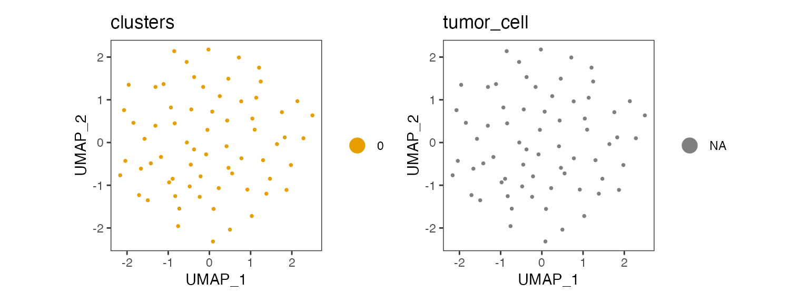

Introduction
We start by loading scatools and a filepath to an
example fragments.bed.gz file containing fragments from 100
normal mammary cells.
Note this vignette is currently set up with dummy normal data and is purely intended to demonstrate package functionality. There are no CNV changes in the test data.
Installation
You can install the development version of scatools from GitHub with:
devtools::install_github("mjz1/scatools")Example
We start by loading scatools, as well as the filepath to
an example fragments.bed.gz file containing scATAC
fragments from 100 normal mammary cells.
library(scatools)
library(dittoSeq)
library(ComplexHeatmap)
library(patchwork)
ncores <- 4 # Adjust accordingly
fragment_file <- system.file("extdata", "fragments.bed.gz", package = "scatools")Now we process this data using scatools. Helper
functions help us to create GenomicRanges bins, and compute
GC content for downstream usage. Here we demonstrate using 10Mb
bins.
Note: To generate your own bins object,
a helper function is provided. Please note that running this function
requires installation of a BSgenome of your choice. Here we
use hg38.
# if (!require("BiocManager", quietly = TRUE))
# install.packages("BiocManager")
# BiocManager::install("BSgenome.Hsapiens.UCSC.hg38")
bins <- get_tiled_bins(
bs_genome = BSgenome.Hsapiens.UCSC.hg38,
tilewidth = 1e7,
respect_chr_arms = TRUE
)We load blacklist regions for our genome. These are used to remove fragments found in low mappability or high signal regions as defined here.
# Get blacklist regions
blacklist <- get_blacklist(genome = "hg38")Then we run the pipeline:
sce <- run_scatools(
sample_id = "test_sample",
fragment_file = fragment_file,
blacklist = blacklist,
outdir = "./example/",
verbose = TRUE,
overwrite = TRUE,
ncores = ncores,
bins = bins
)Plot the results using the dittoSeq package.
p1 <- dittoDimPlot(sce, var = "clusters")
p2 <- dittoDimPlot(sce, var = "tumor_cell")
p1 + p2 & theme(aspect.ratio = 1)
We can visualize the results as a heatmap.
sce <- sce[, order(sce$tumor_cell, sce$clusters)]
col_clones <- dittoColors()
col_clones <- col_clones[1:length(unique(sce[["clusters"]]))]
names(col_clones) <- levels(factor(sce[["clusters"]]))
left_annot <- ComplexHeatmap::HeatmapAnnotation(
tumor_cell = sce[["tumor_cell"]],
cnv_cluster = sce[["clusters"]],
col = list(cnv_cluster = col_clones),
which = "row"
)
p_ht_cna <- cnaHeatmap(sce, assay_name = "segment_merged_logratios", clust_annot = left_annot, col_fun = logr_col_fun())
p_ht_cna
Or plot individual cells
# Plot the first five cells
plot_cell_cna(sce = sce, cell_id = 1:5, assay_name = "logr_modal")